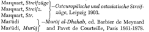
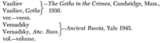

and Literatüre, Vol. i, Cincinnati 1931; Vol. n, Philadelphia
1935.
Marquart, Eranshahr—Erânsahr nach der Geographie des Ps. Moses Xorenac’i, Abhandlungen der königlichen Gesellschaft der Wissenschaften zu Göttingen, Neue Folge, in, 2, Berlin 1901.
Marquart, Historische Glossen—”Historische Glossen zu den
alttürkischen Inschriften,” Vienna Oriental Journal (\Viener
Zeitschrift für die Kunde des Morgenlandes), xa, 1898.

Mas’üdi, Murüj j and Pavet de Courteille, Paris 1861-1878. Mas’üdi, Tanbih—ed. De Goeje, Bibi. Geog. Arab., vra. Minorsky, Hudüd—Hudud al-Alam, Gibb Memorial Series. Minorsky, Marvazi—Sharaf al-Zamân T âhir Marvazi on China,
the Turks and India, Royal Asiatic Society, 1942. Minorsky, “Tamîm”—”Tamîm ibn-Bahr’s Journey to the Uygh-
urs,” Bulletin of the School of Oriental and African Studies,
1948, xn/2, 275-305. Mon. Germ. Scr.—Monumenta Germaniae Historica: Scriptores. M.R.A—Memoirs of the Russian Academy. MS.—manuscript. MSS.—manuscripts. M.T.—Massoretic Text.
Muqaddasi—ed. De Goeje, Bibi. Geog. Arab., m. n.—note. n.d.—no date.
Neubauer-”VVhere are the Ten Tribes?” Jeıvish Çuarterly Re-
vieto, i (1889). Nicephorus—ed. Bonn.
Nöldeke, Beitrage—Beitrâge zur Geschichte des Alexander-
romans, Denkschriften der Wien. Akad., xxxvm, 5. ob.—obiit.
Pelliot, Noms turcs-Faul Pelliot, “Quelques noms turcs
d’hommes et de peuples finissant en ar,’” Oeuvres posthumes
de Paul Pelliot, n, Paris 1950. Platonov, Russie Chretienne-S. F. Platonov, La Russie Chre-
tienne in Avaignac, Histoire du Monde, t. vii (Paris 1931). Poliak, “Conversion”-”The Khazar Conversion to Judaism,”
Zion 1941—in Hebrew. Poliak, Khazaria-Khazaria, Tel Aviv 1944-in Hebrew. Qâmüs-al-Çâmüs al-Muhît of al-Firüzâbâdi, 4 vols., Cairo
1353/1935.
Qazwmi—Cosmography, 2 vols., ed. VVüstenfeld, Göttingen 1848.
Qudâmah-ed. De Goeje, Bibi. Geog. Arab., vı. Rashîd al-Dîn—ed. Blochet, Gibb Memorial Series. R.E.J.—Revue des Etudes Juives.
Schultze—Das Martyrium des heiligen Abo von Tiflis, Texte und Untersuchungen zur Geschichte der altchristlichen Literatür, Neue Folge, xiii (1905).
s.—sub.
ser.—series.
Straek—Firkovitch und seine Entdeckungen, Leipzig 1876.
Streifzüge, Streifz—see Marquart, Streifzüge.
S.V.—Short Version of the Reply of Joseph.
s.v.—sub voce
t.—tome.
Tabari—ed. De Goeje and others, Leiden, 1879-1901. Tafdil-Kitüb Tafdil al-Atrâk, ed. ‘Azzâwi, reproduced by Ş.
Yaltkaya, Belleten, No. 14-15, istanbul 1940. Theophanes—ed. Bonn.
Theophanes Con.—Theophanes Continuatus, ed. Bonn.

Westberg, Beitrage—Stadt und Volk Saksin, Beitrage zur Klar-
ung orientaliseher Çuellen über Osteuropa, Bulletin of the
Russian Academy, 1899. VVestberg, ibrahim ibn-Ya’qüb—Ibrâhîm’s-ibn-Ja’kûb’s Reiseber-
icht über die Slawenlande atış dem Jahre 965, Memoirs of
the Russian Academy, 1898. VVestberg, Gothic Toparch—see Fragmente.
W.Z.K.M.—Wiener Zeitschrift für die Kunde des Morgenlandes.
Ya’qûbi, Buldan—ed. De Goeje, Bibi. Geog. Arab., vn. Yâqüt, Buldan—Mu’jam al-Buldân, ed. VVüstenfeld, Leipzig 1866-1870.
Zajaczkowski, “Culture”—”O kulturze chazarskiej i jej spad-
kobiercach” (The Khazar Culture and its Heirs), Mysl
Karaimska, Breslau 1946. Zajaczkowski, “Problem”—”Problem jezykowy Chazar6w” (The
Problem of the Language of the Khazars), Proceedings of the
Breslau Society of Sciences, 1946. Zajaczkowski, Studies—Ze studioıo nad zagadnieniem chazar-
skim (Studies on the Khazar Problem), Polish Academy,
Cracow 1947.
Zambaur— Manuel de Genealogie et de Chronologie, Hanover 1927.
Z.D.M.G.—Zeitschrift der Deutschen Morgenlandischen Gesell-schaft.
Zeki Validi ~) — ibn Fadlan s Reisebericht, Abhand-
Zeki Validi, lbn-FadlânJ lungen für die Kunde des Morgen-
landes, xxıv (1939). Zeki Validi, “Völkerschaften”—”Völkerschaften des Chazaren-
reiches im neunten Jahrhundert,” Körösi Csoma-Archivum,
1940.
Zeki Validi, “Die Schvverter der Germanen”—in Z.D.M.G., B. 90 (1936), 19-37.
Zeuss, Die Deutschen—Die Deutschen und die Nachbarstamme,
Munich 1837. Zh.M.N.P.-see Z.M.N.P.
Zichy—”Le voyage de Sallâm l’interprete,” Körösi Csoma-Archivum, 1921. Z.M.N.P.—Zhurnal Ministerstva Narodnogo Prosveschenia. Zotenberg—Chronigue de Tabari, Paris 1867-1874.
A
Aaron (Melik), 147, 170, 176 Aba-şad, 122 Abbas ibni el-Velid, 94 Abbasi-ler, 102, 155, 193 Abdullah ibni Başta el-Hazari, 205 Abdurrahman el-Havlani, 100, 102 Abdurrahman en-Nasır, 142, 165 Abdurrahman III., 158 Abdurrahman ibni Abdullah el-Ga-
fiki, 103
Abdurrahman ibni Muhammed ibni
Abdurrahman.. , 155 Abdurrahman ibni Rabia el-Bahili,
63, 64, 65, 67, 70, 208
Abdurrahman ibni Zübeyr, 102
Abdülmelik (Halife), 75
Abdülmelik ibni Müslim el-Ukayli,
89
Abeskun, 163, 164, 227, 256
Abhaz-lar, 42, 120, 272 Abhazya, 196, 197, 200
Abraham ben David, 136, 142, 143,
147
Abşad, 122, 123 Adrianople (Edirne), 231
Afrika, 31 Afşin, 203 Aftasi-ler, 70 Agaçeri-ler, 25 Ahlat bkz. Hilat
Ahmed ibni Kuya, 129, 223, 250, 251
Ak Hazarlar, 25, 109, 241, 250 Ak Hun-lar (Eftalitler), 35 Akatzir-ler, 24, 25, 36, 47, 131 Akkale (Bela Veja, el-Beyda), 259
Aksatan (Şirvanşah), 276 Alan-lar, 11, 29, 35, 42, 59, 77, 82, 97, 111, 176-179, 194, 209, 261,
276
Alanya, 60, 97, 178, 236 Alaric, 131 Alban-lar, 74
Albanya (Arran), 36, 74, 75 Alföldi A., 227 Ali ibni el-Heysem, 228, 277 Alman-lar, 152, 215 Almiş (Almuş), 126, 214 Almutzes, 212, 218
Alp (İlutver), 74, 75 Alp Arslan, 279
Ambazuk (Hun hükümdarı), 42
Amediye, 274, 275 Amid el-Mülk, 278
Amu-derya, 15, 31, 164, 257 Amur ibni Tubal, 29 Anan ben-David, 162 Anastasius (Bizans imp.), 42 Andreas, 44
Anuşirvan bkz. Hüsrev Anuşirvan Arabistan, 143 Araks (Aras), 60
Arap-lar, 10-12, 15, 16, 24, 27, 28,
31, 33, 34, 37, 50, 62, 63, 101, 120, 202, 241
Asena, 173, 174
Aslan Ağzı (yer adı), 41 Asna bkz. Asena Aspandiat, 74 Asparuh (Bulgar hanı), 58 Astarabad, 249 aşkanazi, 282
Atelkuzu, 212, 213, 215, 217, 220
Atil, (İtil/Hazar Devleti’nin başkenti), 107, 112, 113, 119, 121, 197, 210, 228, 250, 267
Attila, 24, 131
Avar-lar, 23, 24, 42, 45, 51, 101, 226
Avgaz bkz. Abhaz
Azak Denizi, 15, 61, 151, 200, 201, 247, 270
Azerbaycan, 38, 39, 44, 63, 67-69,
75, 76, 82-89, 113, 205, 209, 228, 258 Aziz Abo, 196
B
Bab el-Ebvab (Derbend Geçidi), 37,
39, 112, 163, 164, 220 Bab el-Lan, 37 Bab’ül Cihad, 78
Babil, 29, 131, 142, 143, 155, 236
Babür, 203 Bacarvan, 87, 89 Bacgırd (Başkurt), 229 Bactria, 241
Bağdat, 125, 157, 171, 203, 227,
234, 237 Bağdatlı Abo, 211
Bahauddin ibni Şeddad, 243
Bar Hebraeus, 23, 24, 53, 174, 177,
192, 279
Baranjar, 81
Barcik, 78, 84, 88, 89, 174
Bardanes (Philippicus), 188, 189,
190, 191
Barsaliya bkz. Barşaliya Barselonalı Yehuda, 148
Barsil-ler, 51, 57, 60, 61
Barşaliya (Kral), 39 Barşaliya (yer adı), 40, 60 Barthold V. V, 33, 124, 246, 260,
272, 276, 279
Basil-ler, bkz. Barsil
Başgırd (Bacgırd), 234, 235 Başkır-lar, 55, 115, 119
Başmakov A., 29
Batbay (Kubrat’ın oğlu), 58
Batı Türk Hakanlığı, 22
Batı Türkleri, 23, 24, 25, 37, 39, 40,
31, 42, 45, 47, 51, 52, 188 Batu-han, 268 Baylakan, 36, 87, 88, 228
Bazir Arslan-han, 186 Becnak (Peçenek), 229 Becni (Becna), 229
Beg (Bek), 37, 107, 117, 119, 122, 250, 251
Behram Cubin, 112
Bekri el-, 106, 107
Bela (Macar kralı), 214, 281
Bela Veja (Sarkel, el-Beyza), 258,
261, 263, 281 Belencer (kabile), 38, 39, 40, 43 Belencer (yer adı) 30, 37, 38, 65,72,
76, 79, 80, 82, 93, 96, 98
82, 113, 149, 150, 157, 161, 171, 176, 180, 184, 187, 189,, 247, 256, 273, 275
Bluç’an, 199, 200
Bogos, 93
Bonn Üniversitesi, 17
Bosporus (Kerç), 15, 40, 52, 175,
178, 186, 188, 231, 270,
Britanya, 123 Brodnik, 12
Brook K. A., 9 Brutzkus, 157, 179 Brüksel, 17
Buda-peşte, 122
Buddizm, 168
Budge W., 53
Bugal el-Kebir, 209 Buhara, 125, 279
Buhayr, 65
Buhturi (Arap şair), 76
Buku Han, 168
Bulan (Sabriel), 158, 162, 169, 174,
181, 182 Bulgar şehri, 112, 115, 125
Bulgarios, 23
Bulgaristan, 58, 234
Bulgar-lar, 11, 12, 53, 55, 57, 59, 61,
74, 102, 107, 110, 115, 116, 123, 126, 161, 187, 207, 218, 226, 229, 239, 242, 243, 252, 260
Burcan (Bulgar)lar, 29 Burtas nehri, 226
Burtas-lar, 11, 99, 112, 113, 115, 116, 119, 123, 229, 243
C
Cambridge, 16
Camridge Belgesi, 149, 150, 159,.
170-177, 179, 180, 183, 255,
263
Carmoly E., 182 Caspi bkz.Hazar Denizi Cassel, 163 Cavşigir, 127 Cebu Kağan, 44, 45 Cedrenus, 271
Cerrah ibni Abdullah el-Hakemi,
77, 81, 82, 85-88, 92, 96, 98, 184
Ceyhani el-, 123, 124, 125 Charlemagne, 15
Charles Martel, 15, 103
Chavannes E., 221 Chelandia, 212 Christ Kilisesi, 146 Chwolson D., 140, 147 Claproth H. J., 273 Coestler A., 9
Constantine Porphyrogenitus, 58, 151, 156, 183, 192, 212, 213, 214, 216, 217, 218, 219,
235,236
Constantinople, 36, 44, 59, 146, 150, 151, 153, 156, 163, 169, 170, 171, 176, 178, 183, 187, 210, 231, 232, 243, 272
Cuanşir, 199, 200
Cuçi-han, 268 Cungar Kapısı, 130
Curcan, 113, 116, 164, 228, 236, 243, 260
Çingiz-han, 173 Çorpan Tarkan, 44 Çu nehri, 45 Çufutkale, 239 Çuvaş-lar, 201
D
Dahhak-ı Tazi, 33
Dan (kabile), 156
Danimarka, 18
Dar Alan bkz. Daryal Geçidi
Dar el-Babunac, 130
Dar-ı alan bkz. Daryal Geçidi
Daryal geçidi, 35, 60, 82, 83, 84, 92,
97, 167, 193, 196, 199, 209 De goeje, 107, 116, 117 De Guignes, 49, 50 Deinard E., 149 Demir Kapı, 208 Deny J., 22
Derbend (El-Bab), 34, 36, 39-44,
60, 62, 63, 64, 93, 95, 98, 246 Derbend Duvarı, 39, 208
Derbend Geçidi (Bab el-Ebvab), 65,
97, 167, 179, 271 Deylem, 29, 143, 227, 228
Dihistan Sir, 163 Dimaşk, 96 Dimaşki, 106
Dinyeper, 15, 103, 106, 214-217,
237
Dinyester, 58 Diyarbakır, 86
Doğu Avrupa, 15, 24, 26, 53, 63, 103, 280
E
Eber (isim), 29
Ebu hamid el-Endülüsi, 234, 235,
267
Ebu Hureyre, 72
Ebu Tammam, 204
Ebu Yezid Useyd ibni Zafir es-Süle-
mi, 98
Ebu’l Fida, 30, 268
Edom, 161
Efesli John, 23
Efraim ben-Azariya, 274
Efridun, 30
Eirene (Çiçak), 192
Elam, 143
El-Bab (Derbend), 65, 68, 70, 72, 75, 77, 78, 90, 93, 198, 199, 205, 230
El-Beyda (Berdaa), 41, 66, 76, 84,
99, 121, 259 El-Cezire, 88, 96
Eldad ha-Dani, 126, 155, 156, 181 Elias (Bizans spatharius’u), 188,
189, 190 El-Lan (Alan), 229, 231
El-Valandariye (Türk kabilesi), 231
Emevi-ler, 73, 92, 94, 98, 102, 153, 157
Endülüs, 17, 129, 137, 141, 142, 149,. 152-155, 157, 162-165, 179, 180, 183, 226, 229
Erdebil, 84, 85, 87, 92, 162, 184, 227, 258
Erken Wei, 51
Ermeni-ler, 12, 26, 29, 46, 64, 68, 74, 199
Fadıl ibni Sehl, 157, 202, 203 Fadl ibni Yahya, 194
Falaşa-lar, 143
Fars (Pers)lar, 22, 27
Fatımi-ler, 275
Fergana, 235, 248 Filan Şah, 207 Filistin, 139 Fin-ler, 49, 241
Finno-Ugor, 49
Firkoviç, 139, 140, 146, 147, 270 Firuz, 35, 36, 39 Fraehn C. M., 118 Frankl P. F., 156
Frank-lar, 15, 62 Fransa, 252 Fransız-lar, 103
Fu-lin, 50
G
Galatya, 42 Galya, 252 Galyalı-lar, 152
Ganz D., 142
Gardizi, 26, 59, 122, 123, 174, 242, 243, 245
Gazneli-ler, 278
Gebalim-ler, 151, 152 Gedelya II., 138 Gence, 272, 276
George Tarkan, 108 Georgius Tuzl, 271 Geza Kuun, 118
Gibbon E., 15, 43, 49, 52, 257 Gil, 227, 228
Guz (Oğuz)lar, 10, 11, 46, 164, 178,
201, 212, 228, 278 Gürcistan (Curzan), 36, 44, 45, 64,
75, 84, 199, 200 Gürcü-ler, 12, 83, 197, 239, 272
H
Habeşistan, 142 Habib bin Mesleme, 68 Haccac ibni Abdullah, 86 Haci İsrail (Türkmen beyi), 280
Hadi (Halife), 198
Hafız-ı Ebrû, 59 Hakan beh, 127
Hakan David, 270 Hakan-ı Çin, 46, 50
Hakani (şair), 276, 277
Halil İbni Ahmed, 28
Halis Tarkan, 111 Haloun G., 17
Hamlic (Hanbalığ), 116, 121, 153
Hamlik bkz. Hamlic
Hamzin, 79, 93, 194 Hanbalığ, 121, 122, 124
Hanbeli-ler, 227 Hanikov, 276
Harezm, 50, 120, 164, 248, 262 Harezmli-ler, 110 Harezmşah, 235, 265 Harici-ler, 102
Haris ibni Amr, 82, 83, 84, 92 Harkavy A., 140, 146, 147, 149
Harun Reşid, 105, 106, 107, 133,
138, 198, 199
Hasday Grescos, 142
Hazar ibni Baştva, 125
Hazar İvan, 273 Hazar Kapısı, 42, 43 Hazar Leo, 15 Hazar Papatzes, 186
Hazar Tarkan, 99, 100, 207
Hazaran, 107, 168, 177, 234, 260,
264
Hazaran-Atil, 122, 124, 244, 250,
260, 267
Hazar-lar, pek çok yerde.
Hazarya, 12, 17, 22, 28, 45, 63, 66, 76, 82, 90, 93, 96, 100, 101, 102, 107, 11, 113, 116, 124,
130, 133, 136, 139, 141, 1+49,
151,. 153, 154,.157, 158, 164, 168, 170, 171, 181-184, 187, 193, 196, 199, 202, 204, 209, 216, 219, 223, 224, 226, 228, 236, 241, 262, 263, 271, 273, Heftalit (Ak-Hunlar), 23, 35, 36, 40, 47
Helena (İmparatoriçe), 183
Heraklius, 22, 43, 44, 46, 184 Herat, 31 Herder J. G., 133 Hilal eş-Şabi, 246, 247 Hilat (Ahlat), 87
Himyeri-ler, 76
Hindistan, 29,193 Hintli-ler, 27, 28, 113, 223
Hirkanya, 177
Hişam (Halife), 82, 84, 86, 89, 90,
96, 102, 103 Hişam el-Kelbi, 30, 38 Hitler, 12
106
Humus, 96
Hun-lar, 24, 25, 35, 42, 45, 47, 51,
60, 74, 111, 253 Hunni, 24
Huzeyfe b. el-Yeman, 69 Huzeyme ibni Hazım, 199 Hürmüz, 41
Hüseyin (Hz.), 69
Hüsrev Anuşirvan, 10, 16, 28, 29,
32, 43 Hvalis-ler, 110
I-İ
Irak, 88, 203, 235, 236 Isfahan, 234 İbn el-Fakih, 30, 243 İbn el-Mukaffa, 26 İbn’ül Edim, 279
İbn’ül Esir, 59, 70, 74, 84, 86, 89,
93, 106, 263, 272, 278 İbni Abdun, 70 İbni Abdülber, 69 İbni Asam el-Kufi 75
İbni Belhi, 32
İbni Erdeşir Babek, 34
İbni Fadlan, 53, 54, 81, 117-119, 122, 124, 126, 130, 156, 160, 161, 164, 201, 218, 244, 252, 279
İbni Haldun, 67, 70 İbni Hassül, 278
İbni Havkal, 10, 110, 116, 121, 124, 232, 234, 244, 260, 261, 266, 269
İbni Tibbon, 133 İbrahim (Peygamber), 31 İbrahim ibni Aşim el-Ukayli, 88 İbrahim ibni Yakub, 247
İdil Bulgarları, 81, 99, 102, 117,
125, 201, 244 İdil, 10, 15, 32, 52, 57, 60, 61, 72,
84, 99, 123, 126, 130, 151, 163,
164, 197, 201, 212, 241, 242,
243, 255, 269, 273
İfrikiya (Tunus), 142
İlek Hanlar bkz. Karahanlılar
İlutver, 74
İrac (İran), 30
İran (Persiya), 11, 27, 30, 143, 218,
219, 249, 253 İsa (Peygamber), 106, 139, 236 İshak Akriş, 143, 144, 145, 146, 147
İshak bar Abraham, 237
İshak bar Nathan, 170
İshak ben-Eliezer, 151
İshak ibni İsmail eş-Şuayb, 2006
İshak ibni Kundac el-Hazari, 76,
204
İshak Sangari II., 138, 139 İshak Sangari, 137, 138, 139, 140 İskenderiye, 143, 145, 248
İslam (iyet ), 16, 63 İsmailî (Müslüman), 161 İspanyol-lar, 17 İsparta, 227
İsrail, 161, 174, 236, 274, 275 İstahri el-, 17, 107, 116, 117, 118,
119, 121, 130, 163, 174, 201,
232, 234, 242, 244, 255
Josippon, 177
Julian (İmparator), 34
Justinian, 24
Jüstinyen II., 172, 185, 186, 187, 188, 189, 191
K
K’o-sa, 50
Kabala, 36, 79, 90, 138, 216, 218, 219, 220
Kabar-lar 213
Kabe, 125
Kafkaslar (Kafkas dağları), 23, 29,
32, 35-40, 42, 59, 60-63, 74, 75, 92, 100, 136
Kafkasya (bölge), 15, 25, 27, 36, 57, 64, 96, 102, 130, 177, 218, 231,
239, 255, 261 Kağan Beh, 124 Kahetya, 100
Kahire Genizası, 145, 169, 183, 273
Kahire, 145
Kahit bkz. Kahetya
Kahle P., 17
Kalankatuklu Moses, 196
Kalde-liler, 180 Kalikala, 37
Kanatir (Rus kralı), 255 Kandaka (Melike), 31 Kangar-lar, 218 Kapadokya, 42
Kara Hazar-lar, 24, 28, 113
Kara-Balgasun, 168 Karaçaylar, 239
Karadeniz, 58, 61, 116, 151, 243
Kayalıg, 268
Kaymak bkz. Kimak Kayravan, 31, 155 Kazak-lar, 12 Kazarig, 23
Kazvini, 280
Kedar ülkesi, 237
Keddura, 30, 31 Kerbela, 69
Kerç (Bosporus), 243 Kerç Boğazı, 186 Keşek (Kaşak/Kazak), 261 Kevser ibn’ül Esved el-Enbari, 99 Keyhüsrev, 32
Khatiriltber 195 Khaydan (Kaytak)-lar, 78 Khazz, 250, 251
Khersones (Kerç), 176, 178, 180,
184, 187-190, 200, 210
Kıpçak (kuman, Poloves), 268, 273,
275, 276, 277 Kırgız, 26, 31, 111 Kırım, 11, 40, 61, 108, 139, 163,
179, 184, 187,-189, 191, 210,
212, 216, 239, 270 Kızlar, 112
Kidara, 35 Kidari-ler, 35, 36
Kiev, 15, 115, 156, 214, 244, 256, 263, 269, 270
Kimak-lar, 111
Klimata, 178
Kmosko, M. 117, 118, 119 Kokotay, 268
Kokovtsov P., 18, 141, 142, 146, 148, 160, 166, 169, 177, 179
Koyun Adası, 207
Kramers J. H., 107, 116 Ktesifon, 43 Kubad, 36, 37, 38
Kuban, 57 Kubrat-han, 57
Kudama, 39, 40, 59, 164 Kudüs, 151
Kufe, 67, 68, 70, 71, 96 Kulca, 208
Kuman bkz. Kıpçak Kur’an, 224
Kurtuba, 142, 151, 152. 153, 170
Kuteybe b. Müslim, 72 Kutrigur, 217 Kutschera, 271, 277 Kuyaba bkz. Kiev
Kuzari, 107, 133, 134, 142, 168, 169, 184
Kündür Hakan, 127
Kür nehri, 42, 44, 78, 199 Kürd Fadlun, 272, 277
Kürdistan, 274
L
Lakz, 100, 101, 194
Landau, 145, 146, 149, 154, 159,
160-163, 165, 175, 183 Lebedias, 212, 216, 219, 220 Lebedya, 212, 215, 217
Leo IV, 192, 193 Leo IV, 219
Leon İsaur, 191, 192
Levond, 195
Liuntis (Arpad’ın oğlu), 219 Luzane, 226
M
Manehem ben-Saruk, 148, 149 Maniheizm, 168 Mankışlak, 164 Mankub, 263 Mankup Kala, 197 Mann J., 145, 183, 274 Mansur (Halife), 193, 195, 196
Manuel Comnenus, 111 Mar Arman, 152
Mar Saul, 151, 152 Mar Yosef, 151, 152
Marj Erdebil, 85
Marquart J., 18, 25, 38, 53, 59, 64
106, 107, 110, 118, 124, 129, 153, 154, 174, 200, 215, 235, 259, 259, 272
Massaget-ler, 29
Maurice (Bizans imparatoru), 23 Maurus (Bizanslı kumandan), 190 Maveraünnehir, 280
Maymad (şehir), 89, 90
Mayutıs (Maeotis/Azak), 220, 22 Me’mun ibni Muhammed, 265 Mehdi (halife), 196, 198, 243
Mekkari, 152, 157
Melik Şah, 174
Memun (halife), 157
Menahem ben-Saruk, 159, 179, 183
Menahem, 274
Menander Protector, 111
Menbic, 86
Merc el-Hicare, 77
Merv, 31
Mervan ibni Muhammed, 73, 84,
94, 96, 98, 99, 100, 101, 102, 184, 193, 242,
Meşhed, 30, 118
Mezopotamya 151
Mısır, 31, 144, 145, 204 Midraşik, 146 Mikado 226 Mikael III, 210
Minorsky V., 18, 20, 60, 74 Mirhond, 46 Mişna, 162 Moğolistan, 269
Moğol-lar, 28, 92, 162, 173, 240,
253, 273, 277 Morag S., 19 Moravcsik 218 Moskova, 257
Mstislav, 270, 272 Mu’tasım, 203 Mu’tezid, 232, 233, 234
Muahhar Wei, 51 Muaviye, 155
Muhammed (s.a.v.), 15, 28, 69
Muhammed b. Ali el-Katib es-Se-
merkandi, 33 Muhammed ibni Ahmed el-Ezdi,
265, 266
Muhammed ibni Mervan, 75 Muhammid ibni Musa el-Harezmi,
206
Mukaddesi, 164, 202, 206, 241,
264, 266 Muktedir (Halife), 161
Musa (Peygamber), 106, 171
Musevi-ler, 21, 28, 30, 105, 112, 114, 120, 125, 150, 158, 191, 210, 244, 262
97, 99, 105, 108, 112, 113, 124, 129, 134, 199, 223, 228, 229, 240, 244, 270
N
Naffata (Bakü civarı), 227, 228 Narin kalesi, 78
Necm b. Haşim (komutan), 198
Nemeth G., 218 Nerse, 197
Neubauer A., 182, 275 Nicephorus, 59
Nizami, 31, 32, 275, 276 Nöldeke Th., 34
Nuh (Peygamber), 29
Nuh ibn’üs Saib el-Esedi, 100
Nukerde-ler, 229
Numan ibni Münzir el-Hirevi, 28
O-Ö
Obadya, 158, 162, 169
Ogur-lar, 55
Oğuz (Guz)lar, 115, 248, 252, 276,
279, 280 Oleg (Knaz), 181, 214, 272
Olom (voyvoda), 214 On Uygur, 51
Onogundur (Bulgar)lar, 57, 58, 59,
218
Onogur, 51 Oratepe 203 Orhon n.,, 51
Orta Asya, 16, 23, 27, 86, 174, 208, 209,
Osman (Halife), 67, 70, 71, 72
Paygu, 46
Peçenek-ler, 11, 115, 116, 120, 121, 201, 212, 213, 215, 216, 218, 263
Peleg (isim), 29
Pelliot P., 22, 51
Persiya, 50
Pers-ler, 31, 35, 36, 39, 40, 41, 63,
64, 65 Pesah, 180 Petahya, 237 Peuke adası, 58 Philippicus bkz. Bardanes
Photius, 210
Pirene dağları, 62 Podonya, 10
Poliak A. N., 19, 30, 152, 153, 154, 162-164, 175, 183, 202, 267, 274, 275
Polonya, 12, 280
Polyan-lar, 214
Pontus Körfezi, , 24, 228, 229 Priscus, 24, 25, 35, 36, 42, 51 Pritsak O., 19
Procopius, 42, 70
Prud, 216
Puguraya, 53 Pyrenee, 103
Q
Qazar bkz. Hazar
Qol Mebasser, 142, 143, 145, 146,
149
R
Rahdani-ler, 155, 248
Rumiyye (Roma), 226 Rum-lar bkz. Bizanslı Rus-lar, 10, 12, 17, 32, 64, 107, 116,
119, 159, 163, 176, 179, 181,
202, 204, 215, 220, 22, 224,
228, 244, 246, 258, 260, 271, 273, 276, 280 Rusya, 12, 113, 243
S-Ş
Sa’adiya Gaon, 237 Saba, 31 Sabalan dağı, 85 Sabarti-asphali, 218, 219 Sabir-ler, 42, 43, 51, 70
Sabit en-Nehrani, 94
Sabriel (Bulan), 171, 172, 173, 181, 182
Sahak (Piskopos), 74 Sahte-Avarlar, 60
Said b. Salm, 198
Said ibni Amr el-Hareşi, 86,87, 88, 89, 96
Sakalibe (Saklab), 30, 31, 116, 129,
151, 152, 222, 224, 247, 255 Saksın, 123, 235, 268, 273
Sakson, 152 Saleviyye bkz. Slav
Saltov, 253
Samarra, 236, 248 Sambatas, 156 Sambation nehri, 146, 156 Samur, 100
Sangara (Sakarya), 141 Sangarius bkz. Sangara
227
Sebeos, 46 Sebüktekin, 278
Seir dağı, 180 Selçuk, 278
Selçuklu-lar, 46, 277, 278, 279, 280 Se-li-fa, 221 Sellem, 30
Selman el-Farisi, 72
Selman ibni Rabia, 64, 67, 68, 69,
124
Semender (kabile), 43
Semender (şehir), 24, 53, 80, 93, 98, 99, 112, 119, 210, 220
Senariye (yer adı), 209 Sencer, 277 Sennaherib, 271 Sepher ha’Ittim, 147, 160 Sera (isim), 171
Seret, 215, 216, 217 Serir, 101, 112, 119, 207
Severyan-lar, 214
Seyhun bkz. Sir-derya
Seyyid Hasan ibni Zeyd, 256
Shorsunu bkz. Khersones
Simeon (kabile), 156, 181, 182
Simocatta T., 23, 24
Sinan Paşa, 144, 145
Sincibu (İstemi-han), 39, 40, 41, 45,
46, 50 Sind, 29
Sir-derya, 279 Sisacan (yer adı), 36
Siyah Kuh, 164, 264 Siyah Nehir (Til), 23
Suriye, 50, 77, 86, 88, 235 Suriyeli Mikael, 23, 24, 41, 53, 59, 60
Suvar, 115
Sübeyt en-Nehrani, 77 Süleyman (Peygamber), 125 Süleyman b. Rebia el-Bahili 220 Süleyman ibni Hişam, 94 Süryani, 23
Svyatoslav, 10, 214, 259, 260, 261, 262, 263, 266
Symeon (Bulgar kralı), 219, 232,
235 Şabiran, 100 Şad, 44, 45
Şahrbaraz (Şehriyar), 63, 64 Şakik ibni Seleme, 69
Şamkur, 209, 218
Şan (Suriye), 50 Şapur b. Erdeşir, 34
Şa-t’o-lar, 50, 51
Şeddadi-ler, 272 Şehriyar bkz. Şahrbaraz
Şeki, 81, 84
Şem-Tob ben İshak Şaprut, 142 Şeref ez-Zaman el-Mervezi, 122 Şiruya, 34
Şirvan, 228, 276
Şirvanşah-lar, 101, 264, 276, 277 Şoturkes, 204 Şul (Çor’lular), 35
Şul (kabile), 39
T
T’ang hanedanı, 50
247, 271, 272
Tamgac ibni Buğra, 174 Tanrı Dağları, 54, 208 Targhu, 79 Tarkan, 207 Tarniah (kabile), 24
Taşkent, 45, 204 Tay (kabile), 82
Tekin ibni Abdullah al-Hazari, 204
Temim ibn el-Bahr, 30
Tengri Han, 74
Terbel (Bulgar hanı), 187
Tercümen es-Sellem, 206, 207, 208
Terek, 112
Tevrat, 106, 162, 224, 237 Thanagorya, 186, 188, 247 Theodora, 184, 187
Theophanes, 23, 42, 44, 45, 57-61
Theophilus (İmp.,) 200 Tiberius III., 186, 188
Tiflis, 22, 43, 44, 84, 97, 206, 209 Tiflisli Abo, 131
Tiras, 29
Tire Kralı Hiram, 237
Tizul vadisi, 171, 179
Tmutorakan, 247
Togan Z.V., 18, 25, 26, 29, 60, 64,
109, 118, 122, 129,173, 174, 208, 222, 256, 261, 262, 278
Togarma, 150 Toguzguz-lar, 54 Toledo, 137, 143 Tolstov S., 164 Tours, 103
Trullan Konsülü, 191
Türkiye, 9
Türk-ler, 11, 12, 24, 27-32, 37, 40, 41, 44, 49, 75, 95, 103, 111,
114, 121, 122, 131, 135, 150, 173, 174, 201, 203, 211, 212, 226, 228, 230, 231, 235, 241, 262
Türkmen, 280
Tzour (Derbend Geçidi), 179 U-Ü
Umman, 227 Urallar, 98, 208, 212 Uratipa bkz. Oratepe Usruşuna, 203
Utigur (Utrigur)-lar, 40, 43, 51, 58, 188
Uygur-lar, 23, 24, 30, 49, 50, 5154,
168, 174, 207
Üpas ibni Madar, 101 Ürdünlü Agaziri,. 25
V
Valandar (Vanandar), 230, 231 Valarş (Ermeni kral), 26
Van Gölü, 87 Var, 24
Varaçan, 60, 74, 84, 87, 89, 134, 136 Varasan bkz. Varaçan
Varhonit-ler, 23, 52, 53 Vasık (Halife), 206, 209 Vasiliev A. A., 263 Velid bin Ukbe, 67, 68 Velid I., 75 Velid II, 102
Wabandar (Wanandar), 81 Warşiin bkz. Varaçan Wei hanedanı, 25 Westberg F., 216
Y
Yafes, 29, 30 Yafet ibni Ali, 237
Yahuda ha-levi II., 138
Yahuda ha-Levi, 107, 131, 134, 136,
137, 138, 119, 168, 169, 184
Yahudi, pek çok yerde
Yakubi, 17, 29, 37, 38, 53, 74, 89, 248
Yakut el-Hamevi, 39, 117, 118, 119 Yaltavar (Elteber), 125 Yarmolinsky A., 18
Yas-lar, 258, 263 Yecüc-Mecüc, 29, 130, 196, 206
Yehuda bar Meir bar Nathan, 150 Yehuda ben-Barzillay, 147
Yehuda, 160
Yelizavetopol (Gence), 272 Yenisey, 26 Yermuk, 255 Yezdigird, 70
Yezid b. Useyd es-Sülemi, 193, 194,
195, 199 Yezid ibni Muhalleb, 82 Yezid, 82
Yezin ibn Mezyed el-Şeybani, 199 Yezin ibni Abdülmelik, 77
Yiddiş, 281
Yosef (Hazar meliki), 137, 141, 143, 147, 148, 150, 158-163, 167171, 176, 179, 180, 258
Z
Zabender (Semender), 52 Zajaczkowski A., 19, 20, 122, 211 Zakariya Rhetor, 25, 41
Zambaur E. Von, 248, 250
Zunz, (yazar), 182
Zü’l Karneyn Camii, 83 Zü’l Karneyn Seddi, 64 Zübeyr ibn’ül Kayn, 69 Zül-Karneyn, 208